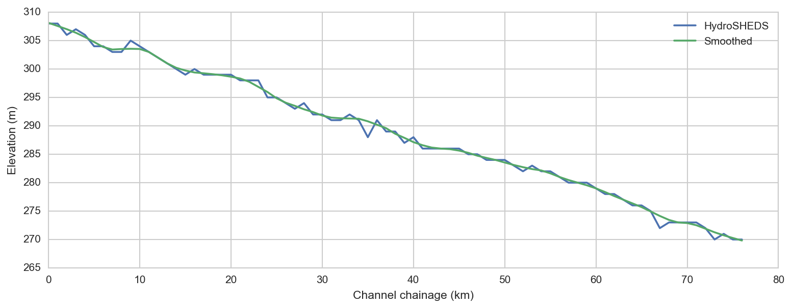
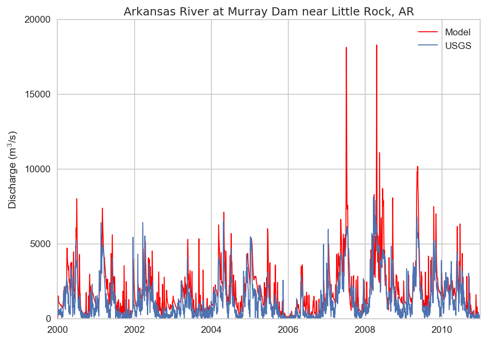
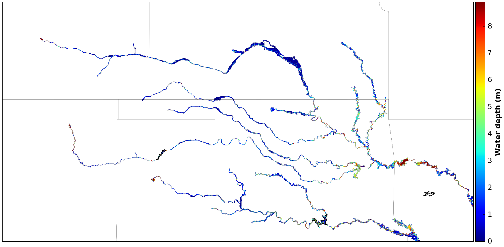
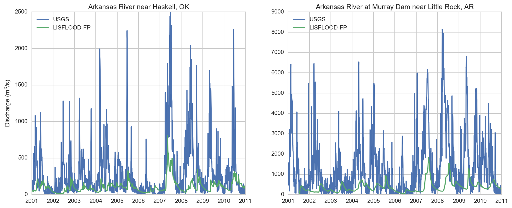

SWOT ST MODEL INTER-COMPARISON
LISFLOOD-FP: Preliminary Results
Kostas Andreadis
Study area
 Arkansas River basin
Arkansas River basin
Model description
- LISFLOOD-FP, a raster-based hydrodynamic model
- Adaptive time stepping to improve stability
- Implemented over numerous rivers at various spatial resolutions
\[\frac{\Delta h}{\Delta t} = \frac{\Delta Q}{\Delta x \Delta y}\] \[\underbrace{\frac{\partial Q}{\partial t}}_{acceleration} + \underbrace{\frac{\partial}{\partial x} \frac{Q^{2}}{A}}_{advection} + \underbrace{\frac{g A \partial (h +z)}{\partial x}}_{water~slope} + \underbrace{\frac{g n^{2} Q^{2}}{R^{4/3}A}}_{friction~slope} = 0\]
Sub-grid channel formulation
Model configuration
- Inputs required
- Floodplain topography
- River channel widths and bank heights
- Model parameters
- Boundary conditions
- Spatial resolution of 1 km
- Model initialized at 80% of bankfull depth
- No calibration performed, default parameters used
- Rectangular channel
- Roughness coefficient = 0.035
Pre-processing steps
- Resample DEM to 1-km resolution
- Generate the river network and chainage
- Estimate and smooth river bank heights
- Identify upstream and lateral boundary locations
- Generate boundary inflows
- Derive river channel cross-sections
River network and DEM
#+ENDSRC
River bank heights, widths and depths
- Channel widths and depths are prescribed from HydroSHEDS database
- Bank heights needed for sub-grid model
- Assumption that HydroSHEDS DEM is bankfull elevation
- Locally weighted smoothing applied to avoid numerical instabilities

Boundary inflows
 NLDAS-2 surface runoff & baseflow
NLDAS-2 surface runoff & baseflow
 VIC routing model
VIC routing model
Boundary inflows
Simple Muskingum-Cunge routing

Model run time
Simulation period: 1/1/2000 - 12/31/2010
*************************** LISFLOOD-FP version 6.1.2 (double) *************************** Starting time steps: acceleration mode SGC mode Using sub-grid channels and acceleration formulation OMP thread count: 16 Total computation time: 1847.93 mins
Maximum water depth

Comparison with streamflow measurements

Next steps
- Model pre-processing has been automated
- See blog post for details
- Extend simulation to entire Mississipi basin
- Use 95th percentile widths and depths
- Evaluate different channel shapes (e.g. parabolic)
- Data assimilation algorithms for generating Level-4 products being developed